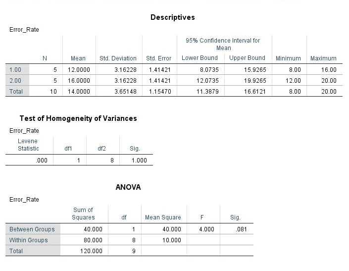
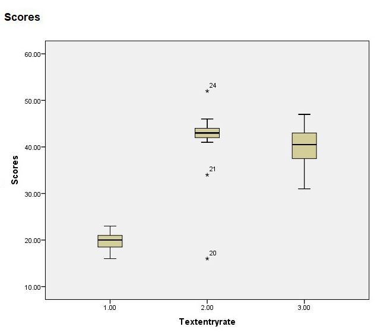
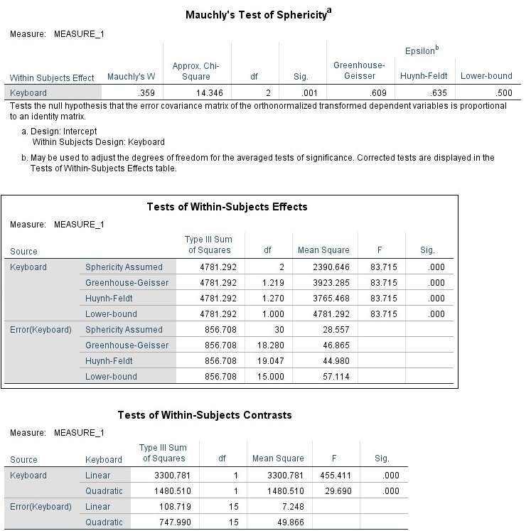

HCI Research
My example interview for housing
Interview or QuestionnaireI decided on a semi-structured interview rather than a questionnaire as I felt it would generate more flexible answers in relation to the question. By conducting interviews, I feel I would ascertain more in-depth answers that would create better qualitative data in order to inform my practice. If I was to do this as a real study, I would utilise the information from the qualitative data in order to re-write questions for a wider online questionnaire.
RecruitmentThe main way I would use to recruit people would be by placing myself within or near the student union in order to gain students whom are likely to be attending the University to ask them questions.
Screener- Are you a student at the University of St Andrews?
- Have you searched for accommodation in the past?
- Are you currently searching for accommodation?
- Do you have and use a smartphone?
- What medium do you predominantly use to search for housing?
- What are the main advantages or disadvantages you have found using this method?
- How long do you search for accommodation before signing a contract?
- Have you used a phone application (excluding browser) to search for housing or flatmates?
- What factors are most important to you when deciding on a house?
- What site features do you look for when comparing or evaluating accommodation?
- How do you generally find other flatmates?
- Do you search on your own or as part of a group?
- Would incorporating Facebook make you more or less likely to use the app for friends?
- Are there any other points you wish to raise that you think would be useful?
The questions attempt to gain market research in order to answer two fundamental questions, firstly what the competition is, and secondly how students are currently finding flatmates and house hunting. These questions provide an understanding for what to include in the application such as the likely customers and how to be different enough to attract them.
My example experiment setup for use of a plant as input
Four General Interaction Issues- The first issue is that people may damage the product through too aggressive touch or interaction.
- They may not enjoy or understand why the products are there to be interacted with.
- Individuals could get hurt through misuse in interaction.
- External forces that may affect the usability of the product the designers may not have been aware of.
Experiment to evaluate this interaction technique
In terms of evaluating there are many potentials that could affect the usability and effectiveness of the interaction technique, these include: how long they interact with the plant, what they do with the plant, how long it takes for them to understand what they need to do, what is their reaction to the plant, which plants do they react best to, after touching the plant would they be more inclined to touch other plants.
This experiment will address many of these questions but not all, further studies would be required for full evaluation.
SetupBetween subject design with one dependent variable (the plant) and one independent variable being the subjects.
I would place the plant within a public place, displaying a simple touch sign and make recordings to test people’s reaction to the plant, I would design a brief questionnaire next to the plant in order to get peoples feedback related to it.
ParticipantsNo set number of participants, ideally over 100 people will interact and perhaps 10% of those will do a questionnaire.
MaterialThe material is a small questionnaire offered to people on a table. A second material will be recording equipment in order to isolate and evaluate people’s reaction to the plant.
ApparatusThe apparatus will be the plant and monitor working in conjunction to display the image, the monitor will be placed on a table next to the table where the questionnaires will be.
ProcedureThe participants are by design random being placed in a public place will hopefully allow for a good difference in people whom see the display and interact with it.
They is no obligation to comply with the interaction however the questionnaire will include a voucher prize for one of the participants to encourage participation.
Example of testing different keyboards
The screenshot of the ANOVA above reports all the following information:
- SStotal = 120
- SSerror = 80
- SSeffect=40
- DFerror=8
DFeffect=1 - F-distribution = 5.32
- F-ratio = 4
The critical value for a significance level of a=0.05 is 5.32. Consequently, as the f-ratio is below the distribution means that we cannot reject the null hypothesis at the 0.5 significance level.
Null HypothesisFor this example, we cannot reject the null hypothesis. The statistical variance is given as 0.081 therefore it cannot be considered a large enough statistically significant difference with the threshold being below 0.05. This is because anything above 0.05 can be considered chance, the fact that it can be considered chance means that it is not necessarily down to a change in the variable that makes the difference between the error rates.
The significance level you can reject each null hypothesisYou can reject each null hypothesis at 0.05. This is the industry standard for determining whether something is caused by chance or whether it is caused by changing the variable. Therefore 95% or below is considered chance anything above is due to a change in the independent variable. Some academic journals only count the work if it is above 99% or below 0.01 in statistical variance. This benchmark to determine whether something is statistically significant ensures that what you are studying can be considered ‘proven’ or ‘not’.
OutcomeThe mean error rate of A is fewer than B (12 vs 16 respectively). We assumed these errors were normally distributed. Analysis of variance at a significance level of α = 0.05 showed that this difference was not statistically significant (F 1,8 = 4, p < 0.05).
Data Analysis
The method used within this analysis was the Repeated Measures ANOVA in SPSS allowing for analysis of the different levels.
Entry Rate
In this boxplot there are three outliers that within a real study would likely have to be removed. Furthermore there are similarities between keyboard B and C in contrast to Keyboard A which has basically half the mean error rate of the others.
Descriptive statistics:- (Mean = 19.69, Standard Deviation =1.957)
- (M=41.63, SD=7.676)
- (M=40, SD=4.179)
The mean entry rate of A is fewer than B (19.7 vs 41.6 respectively) and C is fewer then B (40 vs 41.6 respectively). We assumed these were not normally distributed, there will be an outlier. Analysis of variance at a significance level of α = 0.05 showed that this difference was statistically significant (F 1,18 =83.703, p < 0.05).
The sphericity of p for this example = 0.001, consequently we can state that this is statistically significant as it is less than 0.05. “We can reject the null hypothesis and accept the alternative hypothesis that the variances of the differences are not equal (i.e., sphericity has been violated)” (Field, 2012).
For this example, we reject the null hypothesis. The statistical variance is given as 0.001.It can be considered a statistically significant difference with the threshold being below 0.05. However, getting such a low score may suggest that there is an outlier within the data that would need to be accounted for/removed.
The Greenhouse-Geiser is 0.609 as we know “the closer it is to 1 the more homogenous are the variance of difference and hence the closer the data are to being spherical” (Field 2012).
ConclusionIn conclusion the data appears to contain many errors and outliers within it, so whilst an analysis has been performed with the data as is, to make concrete claims from this may be misleading. Therefore, from my research with the data re-doing it through further tests may improve the reliability of the information, furthermore other tests may improve the validity of the analysis.